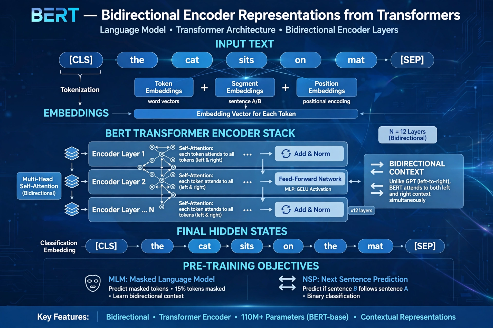

BERT (Bidirectional Encoder Representations from Transformers) is a language model introduced by Google researchers in 2018. Based on the transformer architecture, BERT is pre-trained on large text corpora with masked language modelling and next-sentence prediction, then fine-tuned for downstream tasks.

Unlike earlier left-to-right models, BERT reads text bidirectionally using transformer encoders. In masked language modelling, 15% of tokens are hidden and predicted from context. BERT-Base has 110 million parameters; BERT-Large 340 million. It was pre-trained on BooksCorpus and English Wikipedia.
BERT set state-of-the-art results on GLUE, SQuAD and other benchmarks, transformed NLP practice toward pre-train/fine-tune pipelines, and was integrated into Google Search in 2019. It inspired RoBERTa, ALBERT, DistilBERT, and the wider foundation-model era, even as decoder-only models like GPT later dominated generation.
Transformer · GPT · Large language model
Recreated from memory.